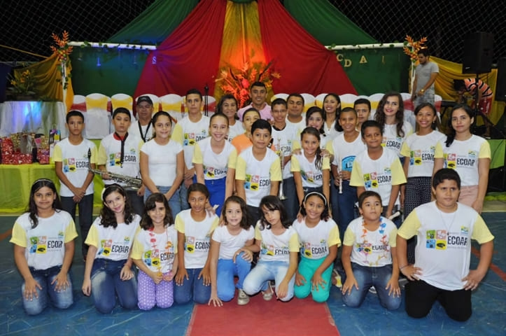
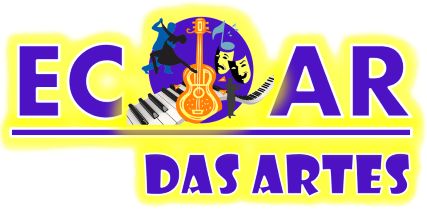
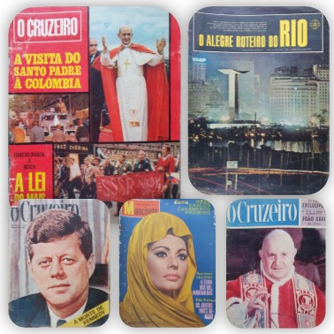
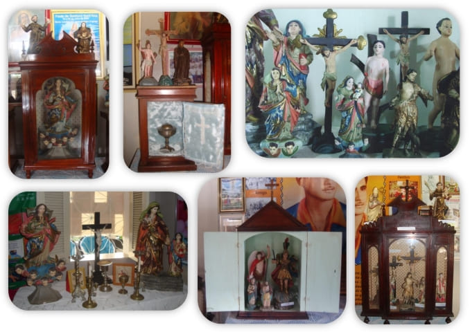
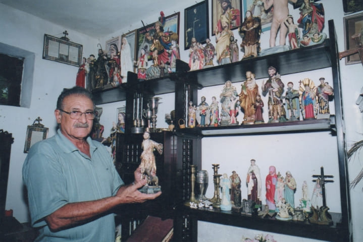

Memórias de nossa cidade
Acervo Histórico da Paróquia
Os Dramas de Caridade - A Ópera do Sertão
Fundada em 2005 a Fundação Cultural Francisco Fonseca Lopes, tem como propósito guardar e prolongar os grandes marcos e boas lembranças do povo de Caridade-CE.
"Nossas Memórias, nossa História, nossa Gente"
Veja aqui o histórico da Fundação
Postagens | Nossos Projetos


A arte é uma forma do ser humano expressar suas emoções, sua história e sua cultura através dos valores. Em uma cidade pequena como Caridade, viu-se a necessidade de haver mais projetos voltados para as crianças e jovens afim de trazer lazer, conhecimento, cultura e mais possibilidades destes expresserem sua criatividade.
Criada em 2013, a Escola de Artes de Caridade - ECOAR trouxe aos pequenos e jovens, aulas de danças, teatro, teclado, violão, flauta, etc.
Acompanhe nossas redes sociais para mais contéudos
Exposições e Documentos Digitalizados
Acesse a versão digital de documentos que estão em nosso acervo
Ao realizar os Downloads você confirma que leu e aceitou os Termos e Condições
thumb | $descrição -
thumb | $descrição -
thumb | $descrição -
thumb | $descrição -
O que você encontrará no Museu?
Além das muitas fotografias e exposições que retratam o passado de nossa cidade, também poderá encontrar a coleção de peças sacras organizada pelo Sr. Francisco Fonseca, assim como outros artefatos históricos que estão sendo preservados para as próximas gerações.


